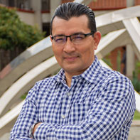

Vicente Alarcón Aquino es Profesor de tiempo completo e Investigador en el Departamento Académico de
Computación, Electrónica y Mecatrónica de la Universidad De las Américas Puebla (UDLAP).
Trayectoria Laboral
- De 1998 a 2002, fue instructor en el Laboratorio de comunicaciones y
procesamiento de señales, y asistente de investigación en el Departamento de ingeniería eléctrica y
electrónica del Imperial College, Londres, Inglaterra en un proyecto apoyado por la Comisión Europea
FP7.
- En el 2017, fue Profesor visitante en el Departamento de informática en King´s College London,
Inglaterra.
-
Desde el 2005, Profesor de tiempo completo e Investigador en el Departamento Académico de
Computación, Electrónica y Mecatrónica de la Universidad De las Américas Puebla (UDLAP).
-
y muchas otras cosas
Áreas de especialidad
- Ciberseguridad
- monitoreo de redes
- detección de anomalías
- análisis con wavelets y aprendizaje automático
Sitio Web Oficial
https://sites.google.com/site/vicentevialaq/home
Redes Sociales Académicas
Formación Académica y tesis realizadas
- Doctorado en Ingeniería Eléctrica y Electrónica. University of London, Imperial College of Science,
Technology and Medicine. Inglaterra. Junio 30, 2003.
- Maestría en Ciencias en la Especialidad de Electrónica. Instituto Nacional de Astrofísica Óptica y
Electrónica . Mexico. Junio 30, 1993.
- Ingeniero Industrial en Electrónica. Instituto Tecnológico de Veracruz. Mexico. Junio 14, 1991.